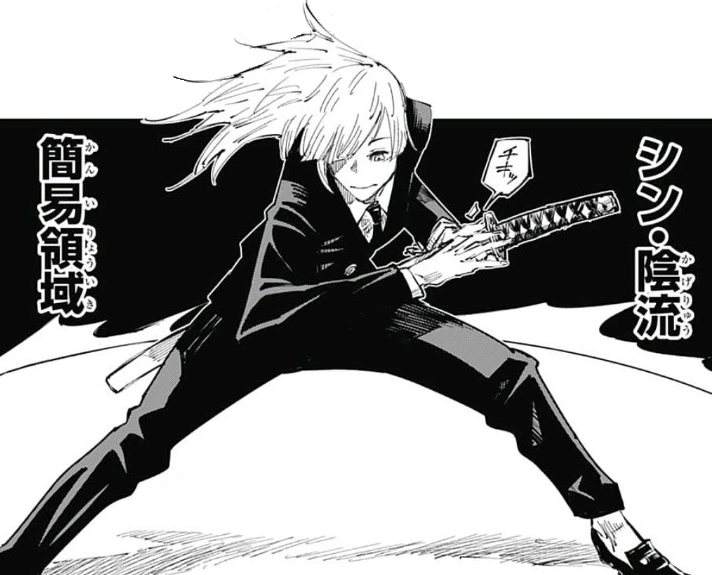
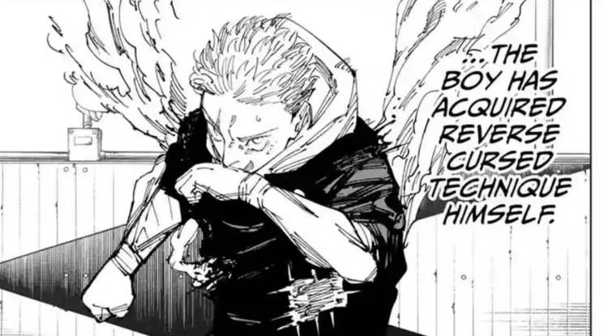
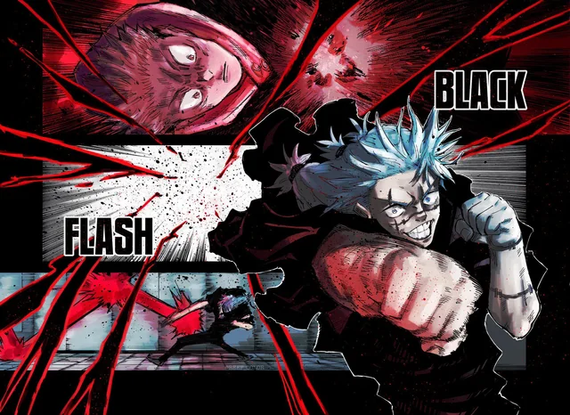
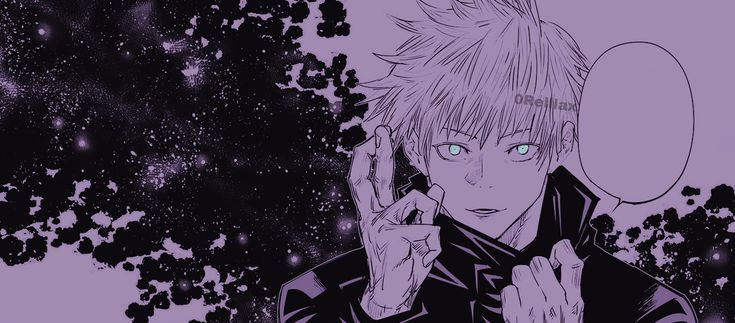
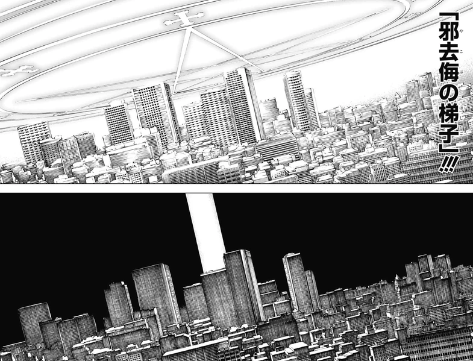

Dominio simples
O Dominio simples são ondas de energia amaldiçoadaque formam um circulo em volta de quem usou
Ele não deixa quem ativou ser acertado por nada que tenha energia amaldiçoada, nem mesmo se forem ataques diretos no corpo
Energia Amaldiçoada Reversa
A energia amaldiçoada reversa é basicamente a energia amaldiçoada que foi usada de forma invertida pelo usuario, invertendo o efeito dela
O efeito dela é basicamente regenerar o corpo do usuario. A energia amaldiçoada reversa so não vai regenerar o corpo do usuario caso o inimigo acerte a alma do usuario
Black Flash
O Black Flash é uma distorção espacial entre o golpe e o inimigo. O Black Flash só pode ser usado em atques corpo a corpo, e não tem como usar ele consientemente pois ele depende basicamente de sorte
O Black Flash multiplica o poder distrutivo do ataque do usuario em 2.5 e faz o usuario entra em um estado de "zona" que torna a manipulação da energia amaldiçoada mais facil que repirar
Expansão de Dominio
A expansão de dominio é um domo (branco para feiticeiros e preto para maldições) onde o usuario tem acerto garantido
Essa tecnica pode ser usada por qualquer feiticeiro, o efeito da expansão muda de acordo com o usuario, crindo um espaço feito da tecnicado usuario
Tecnica Maxima
A Tecnica Maxima é o ataque mais forte do feiticeiro, e acaba sendo possivel usar poucas vezes em um dia
